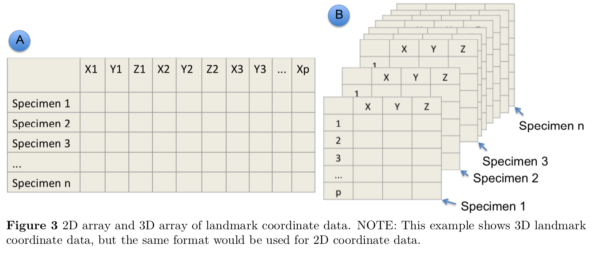
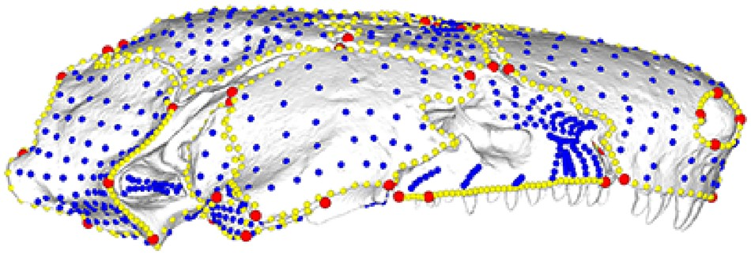

![Rodent lower jaw (mandible). Lateral view of a Nectomys squamipes mandible, showing the 10 landmarks used in this work. 1) Anterior edge of the incisive alveolus; 2) Most posterior point of the diastema; 3) Junction between the mandible and the m1 root; 4) Junction between the molar base and the coronoid process; 5) Most posterior point at the articular process; 6) Most anterior point in the angular notch; 7) Most posterior point at the angular process; 8) Angular process base; 9) Inner edge of the mandibular symphysis; 10) Posterior edge of the incisive alveolus](../../images/rodentmandible.jpg)
{kind=link}
require(geomorph)
files <- c("red-fox-mandible-lateral.jpg")
# files <- list.files(pattern = "*.jpg")
# for multiple files in your image directoryAcknowledgements
References for this Material:
- Bardua et al (2019) A Practical Guide to Sliding and Surface Semilandmarks in Morphometric Analyseshttps://academic.oup.com/iob/article/1/1/obz016/5526881
- Emma Sherratʻs quick guide to Geomorph
Learning objectives
Learning objectives
At the end of this lesson you will:
- Be able to collect landmark data
- Understand the terminology for landmark data
Preparation
Packages:
geomorph
rgl
Matrix
Please install if you donʻt have them. install.packages(c("geomorph","rgl","Matrix"), dependencies=T)
Mac Users: Please also install Xquartz https://www.xquartz.org, a windowing system for rgl.
Files:
red-fox-mandible-lateral.jpg Please download into your folder for this exercise. Source: Jim Russell
Overview
Traditional morphometrics uses linear measurements such as body length, hind limb length, etc. to characterize morphological variation. This works well for many questions, especially ones that relate to lever mechanics, such as locomotion or bite force, etc. but does not capture 3D variation well such as the geometric shape of a skull or the details of seed shape.
Geometric morphometrics aims to characterize more complex shapes by the use of landmarks, locations on the specimens determined by the researcher to reveal key insights or capture the full range of variation.
In order to do this, we still need methods to characterize size vs. shape. For geometric morphometrics that is typically Procrustes superposition. Some other differences also involve the data. Whereas one can typically take linear measurements directly on the specimen (with calipers or a ruler), collecting landmark data usually involves some image capture.
Capturing images
The most important thing is consistency and a protocol that minimizes error. While the specific protocol will vary by the type of object and technology (cameras, uCT, etc.), some general principles are :
- Specimen Layout
- Be as consistent as possible in the preparation of specimens and their arrangement
- Place every specimen on the same side. (Capture the same aspect of each specimen)
- Same pose or posture
- Mouths open? Closed?
- Fins or dewlaps exposed to show shape and articulatio, etc.
- Size and Metadata
- Include a size standard (e.g., a ruler), ideally the same item, with X-Y information
- Include the specimen ID in the photo itself (written on a card, etc.)
- Camera
- Camera in same position and same angle, preferably with a tripod
- Use the same camera and lens (or zoom, etc.)
- Make several backups (multiple flash cards, save to computer, etc.)
- Specimen perpendicular to camera (check level)
- Same lighting
- Take several photos as backup
- Data Management
- Keep a notebook (written log) of the specimens being photographed, in order
- Transfer files to raw data folder for photos (in same format and same order)
- Name files with metadata in filenames for each specimen, save in another folder
- You should have Raw_Photos, Named_Photos folders.
Errors and distortions can be fixed with software, but it is much easier to minimize them at the start.
Landmarks
Essential features of good landmarks:
Choose landmarks that are:
- Present on all specimens
- Relevant to the question
- Clearly defined (to be repeatable)
- Conform to accepted best practices for your type of study (do a literature search)
Here is an example of typical landmarks:
Digitizing Landmarks on Images
Acquiring landmarks usually involves some digitizing by hand (with computer assistance). For 2D landmark data the workflow is:
- Read in the image file
- Set the scale
- Digitize landmarks, collecting X-Y coordinate data
Image files are rows and columns of pixels, the number of which is determined by the file size and resolution. Pixels therefore, form a grid which we can digitize, meaning we can indicate at which pixel our landmark of interest is. We translate the pixel coordinates into real-world distances, typically by ditigizing an object of known dimensions such as a ruler. Digitizing software typically asks the user to indicate the points on the screen and the known distances they correspond to.
Easy-to use software for this purpose include ImageJ and FIJI, as well as the geomorph package in R. Before doing a large project, I would try them all to see which serves your purpose the best.
geomorph package
The package geomorph is widely used for geometric morphometrics, and will serve as a good example to illustrate the geometric morphometrics workflow all in R (depending on the project and the material, however, you may find it more convenient or efficient to use other software for digitizing).
Digitizing landmarks in geomorph
For a quick example, letʻs do a 2D landmark collection on the Red Fox Mandible using digitize2d(). Emma Sherratʻs quick guide to Geomorph provides a more thorough walk-through for capturing landmarks in Chapter 15.
The syntax for digitize2d() is:
digitize2d(filelist, nlandmarks, scale = NULL, tpsfile, verbose = TRUE)
Where:
filelist: a vector of filenames of image filesnlandmarks: the number of landmarks to digitize
scale: the length of scale to use (optional)
tpsfile: the name of an output file to create or read
digitize2d( files,
nlandmarks=10,
scale=80,
tpsfile = "mandible-lat.tps",
verbose = TRUE) R will now wait for you to digitize the first landmark. In verbose mode, it will ask you to confirm each landmark (this can be turned off). If a landmark is missing, choose a for absent. If you make a mistake and choose n, it will ask you to redigitize it. The output will be sent to a .tpsfile.
TPS format
TPS format is a standard morphometric data format for storing landmark coordinate data.
readland.tps() reads TPS format and returns an array: p landmarks by k dimensions by N specimens.
Remember an array is simply a multidimensional dataframe. Think of it here as a stack of spreadsheets. Each spreadsheet has rows for landmarks and columns for dimensions. We have a separate spreadsheet for each specimen, making this a 3-dimensional array.
The third dimension of this array contains names for each specimen, which are obtained from the image names in the .tps file. We can read in the data that we digitized above:
dat <- readland.tps("mandible-lat.tps", specID = "ID", readcurves = FALSE, warnmsg = TRUE)
No curves detected; all points appear to be fixed landmarks.dat, , ../../images/red-fox-mandible-lateral.jpg
[,1] [,2]
[1,] 107.29125 109.47242
[2,] 103.69036 108.94577
[3,] 101.66872 108.37825
[4,] 43.63469 105.62467
[5,] 10.59532 111.73118
[6,] 16.56440 102.17078
[7,] 12.09659 98.37737
[8,] 34.05770 93.06904
[9,] 66.20128 89.99578
[10,] 113.50334 107.91870Note that the name saved with the data in this case was the file name. For another example, check out the plethodon data included with geomorph
data(plethodon)
attributes(plethodon)$names
[1] "land" "links" "species" "site" "outline"str(plethodon)List of 5
$ land : num [1:12, 1:2, 1:40] 8.89 9.27 5.56 1.87 1.28 ...
..- attr(*, "dimnames")=List of 3
.. ..$ : NULL
.. ..$ : NULL
.. ..$ : NULL
$ links : num [1:14, 1:2] 4 3 2 1 1 6 7 8 9 10 ...
$ species: Factor w/ 2 levels "Jord","Teyah": 1 1 1 1 1 1 1 1 1 1 ...
$ site : Factor w/ 2 levels "Allo","Symp": 2 2 2 2 2 2 2 2 2 2 ...
$ outline: num [1:3631, 1:2] 0.399 0.4 0.401 0.403 0.404 ...3D coordinates in tps format simply have a third dimension (z in addition to x and y) in each spreadsheet (one spreadsheet or table per specimen).

Semi-Landmarks
Oftentimes, there is more shape variation than what is captured by the landmarks themselves, which are only points. In addition, sometimes curves and surfaces have no distinct feature that can be reliably captured as the same homologous point from specimen to specimen. For example, the curvature of a smooth shell may lack any distinct landmarks. In both of these cases, semi-landmarks can be helpful.
Semi-landmarks are regularly spaced points between two landmarks or along a curve or a surface.
Sliding semi-landmarks are spaced linearly along a curve.
Surface semi-landmarks are spread out evenly in 3D along a surface.
NOTE: One thing to note is that any error in the landmarks will also be propagated to the semilandmarks.

See (Bardua et al. 2019) for an excellent review article and practical guide.
Annotated 3D version of this figure available at: https://sketchfab.com/3d-models/add35e2e8af94839b1f577bfcee32e54
Letʻs practice digitizing 3D landmarks with the geomorph vignette: https://cran.r-project.org/web/packages/geomorph/vignettes/geomorph.digitize3D.html
More geomorphic morphometrics software
References
Bardua, C, R N Felice, A Watanabe, A -C Fabre, and A Goswami. 2019. “A Practical Guide to Sliding and Surface Semilandmarks in Morphometric Analyses.” Integrative Organismal Biology 1 (1). https://doi.org/10.1093/iob/obz016.